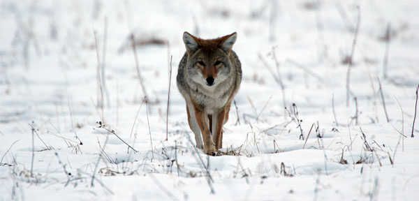

About the Eastern Coyote
What is the Eastern Coyote?
The Eastern Coyote - also known as Canis latrans var. It is a hybrid species in it's self, being a mix of Canis lupus/Canis lycaon and Canis latrans.
What does the Eastern Coyote eat?
The Eastern Coyote is an omnivore, a predator, and an opertunistic scavenger. They will eat anthing from berries, bugs, and birds to small mammals and even moose as the oppertunity arises.
Where is the Eastern Coyote found?
The Eastern Coyote can be found in the north eastern United States and in Canada as far inland as Ontario and as far east as Newfoundland.
When was the Easten Coyote introducted to Newoundland?
The Eastern Coyote is believed to have made it's way via ice flows to Newfoundland in the
How does the Eastern Coyote affect the NL ecosystem?
The effect of the Eastern Coyote on the NL ecosystem is somewhat in debate. The coyotes are effective with dealing with the large hare population that had few preadators since the exinction of the Newfoundland wolf. However there had been increasing concern on the effects of the coyote population on the caribou population and if their dwindiling numbers can be contributed to the coyote. There is on proof of this and sadly it could be too late before we truly know if this is in fact causation and not a coralation.